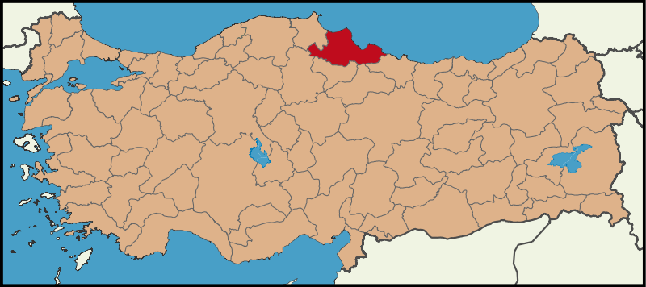

Samsun is a city on the north coast of Turkey with a population over half a million people. It is the most crowded
city in Black Sea Region and the most advanced in education, health, industry, trade, transportation and economy.
Samsun known as "The Capital of Black Sea Region" and "The City of Atatürk".

Statue of Honor, aka Atatürk Monument, is a monument situated at Atatürk Park in İlkadım district of Samsun, Turkey
dedicated to the landing of Mustafa Kemal Atatürk in Samsun initiating what is later termed the Turkish War of Independence.
The monument became the landmark of Samsun.